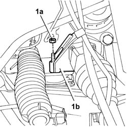
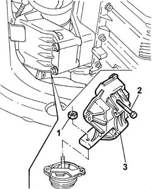
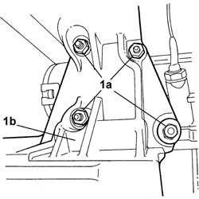
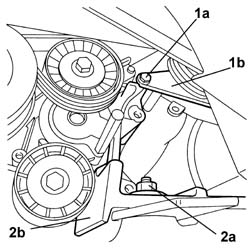

1008A46 Power unit RIGID MOUNT - TIMING side - R&R
- Path
- Procedures > 10 ENGINE > 1008 POWER UNIT SUPPORTS > 1008A power unit fastenings > 1008A46 Power unit RIGID MOUNT - TIMING side - R&R
- Kind
- repair procedure (removal / refitting; the operation number is the code)
- Applies to
- engines: 2.0 TB, 2.4 20V, 3.0 V6, 3.2 V6; all production periods
- Interactive page
- https://sloeber94.github.io/elrnDB-lThss/en/#/74607
Applies to: engines: 2.0 TB, 2.4 20V; all production periods
 Removing
Removing
 Refitting
Refitting- Position the vehicle on a lift.
See in Op. 7040D50 ENGINE COMPARTMENT UPPER SOUND INSULATION SHIELD - R.R.
See in Op. 5040A10 Air conditioning coolant circuit - Drying and Repressurizing
- Open the boot, remove the cover on the left hand side and disconnect the negative battery lead.
- Raise the vehicle on the lift.
Applies to: engines: 2.4 20V; all production periods
See in Op. 7055B54 PROTECTION/GUARD under engine - R.R.
See in Op. 4450B04 Right FRONT WHEEL (one) - R.R.
See in Op. 7055B42 FRONT WHEEL ARCH LINER (one), left or right - R.R.
See in Op. 7055B64 Engine compartment DUST SEAL in front wheel arch (one), left or right - R.R.
See in Op. 1048A21 AIR INLET HOSE FROM INTAKE TO FILTER - R.R.
See in Op. 1048A10 COMPLETE AIR FILTER -R.R.
See in Op. 1016A40 Ignition COIL COVER on cylinder head - R.R.
See in Op. 1092G10 Engine components single drive BELT - R.R.
See in Op. 1092G21 Engine components single belt FIXED TENSIONER - R.R. with belt removed
Applies to: engines: 2.0 TB; all production periods
See in Op. 7055B54 PROTECTION/GUARD under engine - R.R.
See in Op. 4450B04 Right FRONT WHEEL (one) - R.R.
See in Op. 7055B42 FRONT WHEEL ARCH LINER (one), left or right - R.R.
See in Op. 7055B64 Engine compartment DUST SEAL in front wheel arch (one), left or right - R.R.
See in Op. 1048A50 air inlet pipe to turbocharger - r + r
See in Op. 1048A21 AIR INLET HOSE FROM INTAKE TO FILTER - R.R.
See in Op. 1048A10 COMPLETE AIR FILTER -R.R.
See in Op. 1016A40 Ignition COIL COVER on cylinder head - R.R.
See in Op. 1092G10 Engine components single drive BELT - R.R.
See in Op. 1092G21 Engine components single belt FIXED TENSIONER - R.R. with belt removed
Applies to: engines: 2.0 TB, 2.4 20V; all production periods
1. Undo the nut (1a) fixing the rigid rear support (1b) to the flexible mounting.

Applies to: engines: 2.0 TB, 2.4 20V; all production periods
- Position the hydraulic lifting device under the gearbox bellhousing.
- Raise the power unit and temporarily secure the rigid support to the gearbox bellhousing.
- Move the hydraulic lifting device under the engine oil sump.
1. Undo the nut fixing the engine/compressor support to the power unit flexible mounting.
2. Undo the four bolts fixing the engine/compressor support to the cylinder block/crankcase.
- Using the hydraulic lift, slightly raise the engine until the support slips away from the flexible mounting stud.
3. Remove the air conditioning compressor/engine support.

Applies to: engines: 2.0 TB, 2.4 20V; all production periods
Refitting
Removing- Working with the hydraulic lifting device positioned under the engine oil sump, fit the air conditioning compressor/engine support fitting the flexible mounting on the stud.
- Tighten the bolts fixing the engine/compressor support to the cylinder block/crankcase to the recommended torque.
 | Value - daNm | Fastening | Component | Ø |
|---|---|---|---|---|
. | (to the cylinder block/crankcase) 5 | Bolt | RIGID ENGINE MOUNT, TIMING SIDE | M10 X 1.25 |
- Tighten the nut fixing the engine/compressor support to the power unit flexible mounting.
| Value - daNm | Fastening | Component | Ø |
|---|---|---|---|---|
. | 5 | Nut | RIGID ENGINE MOUNT, TIMING SIDE | M10 X 1.25 |
- Tighten the nut (1a) fixing the rigid rear support (1b) to the flexible mounting.
| Value - daNm | Fastening | Component | Ø |
|---|---|---|---|---|
. | 5 | Nut | RIGID REAR SUPPORT POWER UNIT | M10 X 1.25 |
- Position the hydraulic lifting device under the gearbox bellhousing.
- Undo the bolts fixing the rigid support to the bellhousing.
- Place the gearbox carefully on the power unit supporting crossmember.
Applies to: engines: 2.4 20V; all production periods
See in Op. 1092G21 Engine components single belt FIXED TENSIONER - R.R. with belt removed
See in Op. 1092G10 Engine components single drive BELT - R.R.
See in Op. 1016A40 Ignition COIL COVER on cylinder head - R.R.
See in Op. 1048A10 COMPLETE AIR FILTER -R.R.
See in Op. 1048A21 AIR INLET HOSE FROM INTAKE TO FILTER - R.R.
See in Op. 7055B64 Engine compartment DUST SEAL in front wheel arch (one), left or right - R.R.
See in Op. 7055B42 FRONT WHEEL ARCH LINER (one), left or right - R.R.
Applies to: engines: 2.0 TB; all production periods
See in Op. 1092G21 Engine components single belt FIXED TENSIONER - R.R. with belt removed
See in Op. 1092G10 Engine components single drive BELT - R.R.
See in Op. 1016A40 Ignition COIL COVER on cylinder head - R.R.
See in Op. 1048A10 COMPLETE AIR FILTER -R.R.
See in Op. 1048A21 AIR INLET HOSE FROM INTAKE TO FILTER - R.R.
See in Op. 1048A50 air inlet pipe to turbocharger - r + r
See in Op. 7055B64 Engine compartment DUST SEAL in front wheel arch (one), left or right - R.R.
See in Op. 7055B42 FRONT WHEEL ARCH LINER (one), left or right - R.R.
Applies to: engines: 2.0 TB, 2.4 20V; all production periods
- Connect the negative battery lead.
See in Op. 5040A10 Air conditioning coolant circuit - Drying and Repressurizing
See in Op. 7040D50 ENGINE COMPARTMENT UPPER SOUND INSULATION SHIELD - R.R.
- Remove the vehicle from the lift.
Applies to: engines: 3.0 V6, 3.2 V6; all production periods
Removing
Refitting- Position the vehicle on a lift.
- Make sure that the ignition key is in the OFF position, open the boot, remove the cover on the left hand side and disconnect the negative battery lead.
See in Op. 7040D50 ENGINE COMPARTMENT UPPER SOUND INSULATION SHIELD - R.R.
See in Op. 1088B10 Engine coolant SUPPLY RESERVOIR - R.R.
See in Op. 1008C10 Power unit REACTION ROD - Replace
See in Op. 4450B04 Right FRONT WHEEL (one) - R.R.
See in Op. 1088E10 Radiator cooling FAN - R.R.
See in Op. 5040A10 Air conditioning coolant circuit - Drying and Repressurizing
- Raise the vehicle on the lift.
See in Op. 7055B54 PROTECTION/GUARD under engine - R.R.
See in Op. 7055B64 Engine compartment DUST SEAL in front wheel arch (one), left or right - R.R.
See in Op. 7055B42 FRONT WHEEL ARCH LINER (one), left or right - R.R.
See in Op. 1092G10 Engine components single drive BELT - R.R.
See in Op. 1032B10 TOOTHED timing BELT - R.R. for timing adjustment or replacement
See in Op. 1008C16 BRACKET on BODY for reaction link - R.R.
- Position a hydraulic jack under the engine sump
1. Undo the nuts (1a) fixing the support (1b) to the cylinder block/crankcase.

Applies to: engines: 3.0 V6, 3.2 V6; all production periods
1. Undo the bolt (1a) fixing the reinforcement bracket (1b) between the power assisted steering pump and the support.
2. Undo the nut (2a) fixing the support (2b) to the flexible mounting and, after having raised the jack as much as necessary, remove the support from the engine compartment side.

Applies to: engines: 3.0 V6, 3.2 V6; all production periods
Refitting
Removing- Position the support and tighten the fixing nut to the recommended torque.
| Value - daNm | Fastening | Component | Ø |
|---|---|---|---|---|
. | 4,5 | Nut | FRONT FLEXIBLE MOUNTING BLOCKS, POWER UNIT | M10X1.25 |
- Tighten the bolt fixing the reinforcement bracket between the power assisted steering pump and the support.
| Value - daNm | Fastening | Component | Ø |
|---|---|---|---|---|
. | 2.2 | Bolt | POWER STEERING PUMP SUPPORT/BRACKET | M8 |
- Tighten the nuts fixing the support to the cylinder block/crankcase to the recommended torque.
| Value - daNm | Fastening | Component | Ø |
|---|---|---|---|---|
. | 2.2 | Nut | FRONT FLEXIBLE MOUNTING BLOCKS, POWER UNIT | M8 |
- Remove the hydraulic jack.
See in Op. 1008C16 BRACKET on BODY for reaction link - R.R.
See in Op. 1032B10 TOOTHED timing BELT - R.R. for timing adjustment or replacement
See in Op. 1092G10 Engine components single drive BELT - R.R.
See in Op. 7055B42 FRONT WHEEL ARCH LINER (one), left or right - R.R.
See in Op. 7055B64 Engine compartment DUST SEAL in front wheel arch (one), left or right - R.R.
See in Op. 7055B54 PROTECTION/GUARD under engine - R.R.
- Lower the vehicle.
See in Op. 5040A10 Air conditioning coolant circuit - Drying and Repressurizing
See in Op. 1088E10 Radiator cooling FAN - R.R.
See in Op. 4450B04 Right FRONT WHEEL (one) - R.R.
See in Op. 1008C10 Power unit REACTION ROD - Replace
See in Op. 1088B10 Engine coolant SUPPLY RESERVOIR - R.R.
See in Op. 7040D50 ENGINE COMPARTMENT UPPER SOUND INSULATION SHIELD - R.R.
- Connect the negative battery terminal and position the cover on the left hand side of the luggage compartment.
- Remove the vehicle from the lift.
Topics linked from this page (18)
- 1008C10 Power unit REACTION ROD - Replace
- 1008C16 BRACKET on BODY for reaction link - R.R.
- 1016A40 Ignition COIL COVER on cylinder head - R.R.
- 1032B10 TOOTHED timing BELT - R.R. for timing adjustment or replacement
- 1048A10 COMPLETE AIR FILTER -R.R.
- 1048A21 AIR INLET HOSE FROM INTAKE TO FILTER - R.R.
- 1048A50 air inlet pipe to turbocharger - r + r
- 1088B10 Engine coolant SUPPLY RESERVOIR - R.R.
- 1088E10 Radiator cooling FAN - R.R.
- 1092G10 Engine components single drive BELT - R.R.
- 1092G21 Engine components single belt FIXED TENSIONER - R.R. with belt removed
- 4450B04 Right FRONT WHEEL (one) - R.R.
- 5040A10 Air conditioning coolant circuit - Drying and Repressurizing
- 5040A20 Air conditioning COMPRESSOR - R.R. - Includes fluid level check and top up if necessary
- 7040D50 ENGINE COMPARTMENT UPPER SOUND INSULATION SHIELD - R.R.
- 7055B42 FRONT WHEEL ARCH LINER (one), left or right - R.R.
- 7055B54 PROTECTION/GUARD under engine - R.R.
- 7055B64 Engine compartment DUST SEAL in front wheel arch (one), left or right - R.R.